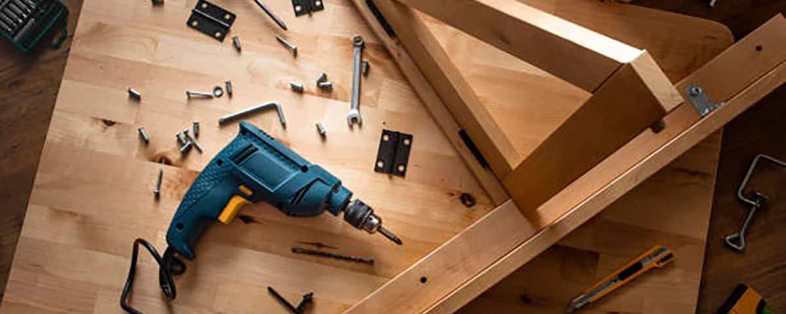

Сборка мебели
Нанять грузчиков и грузовой транспорт для офисного переезда вы всегда сможете в нашей компании. Наши специалисты проводят сборку и разборку любой мебели. При необходимости офисная мебель и другие вещи будут аккуратно упакованы.
Мы организуем и проводим как простые переезды маленьких офисов, так и более сложные работы по переезду больших офисов, отличающиеся сложной и организованной логистикой.
В спектр предлагаемых нами услуг входит также погрузка, разгрузка и перевозка габаритного офисного оборудования, сейфов и банкоматов.
Справится наша компания и с переездами складов и магазинов, имея грузчиков со специальными навыками и оборудованием